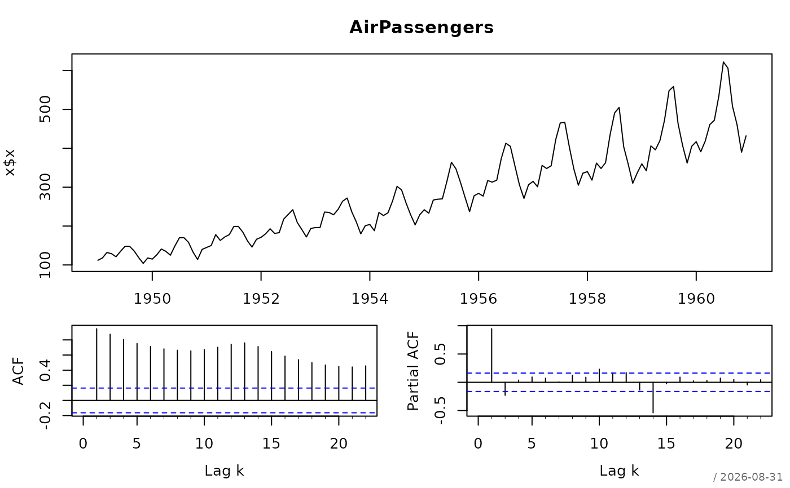
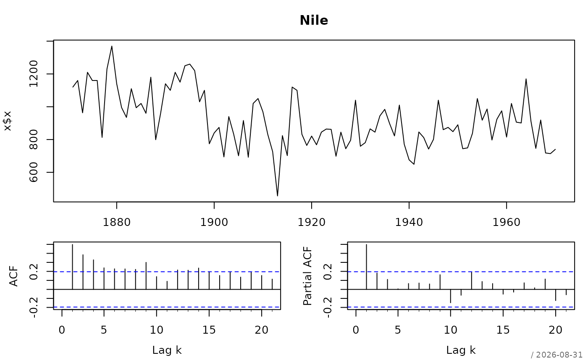

Provides a compact diagnostic summary for univariate ts objects,
extending classical descriptive statistics with key time series diagnostics.
Arguments
- x
a univariate object of class
"ts"- maxLag
number of lags used in the Ljung-Box test; defaults to 12
- main
character string,
NULL, orNA, defining the main title. By default (main = NULL) the title will be composed as:(<class(es)>). If NA, no title is printed.- plotit
logical. Should a plot be created? The plot type depends on the classes of the variables. Default can be defined by the option
plotit, if it does not exist then it's set toTRUE.- verbose
integer controlling verbosity of table output. One of
1(minimal),2(default),3(extensive). Applies to tables only.- ...
further arguments passed to methods
- digits
number of digits used to format numeric values
Details
The function reports:
Lag-1 autocorrelation
Ljung-Box test for overall autocorrelation
Augmented Dickey-Fuller (ADF) test
KPSS test
Linear trend estimation (slope and p-value)
Suggested Box-Cox transformation parameter
The goal is to provide quick diagnostic guidance before model fitting (e.g., ARIMA specification).
Stationarity is evaluated using both the Augmented Dickey-Fuller (ADF) and KPSS tests. A combined decision rule is used: the series is considered stationary if the ADF test rejects the null hypothesis of a unit root (p < 0.05) and the KPSS test does not reject the null hypothesis of stationarity (p > 0.05).
The Box-Cox transformation parameter is estimated using
boxCoxLambda().
References
Box, G. E. P., Jenkins, G. M., Reinsel, G. C., & Ljung, G. M. (2015). Time Series Analysis: Forecasting and Control.
Hyndman, R. J., & Athanasopoulos, G. (2021). Forecasting: Principles and Practice.
Examples
desc(AirPassengers)
#> Warning: p-value smaller than reported p-value
#> ──────────────────────────────────────────────────────────────────────────────
#> AirPassengers (ts)
#>
#> Warning: number of columns of result is not a multiple of vector length (arg 1)
#> start end frequency
#> 144 118 0 144 118
#>
#>
#> start end frequency
#> 1949-1 1960-12 12
#>

desc(Nile, maxLag = 10)
#> Warning: p-value smaller than reported p-value
#> ──────────────────────────────────────────────────────────────────────────────
#> Nile (ts)
#>
#> Warning: number of columns of result is not a multiple of vector length (arg 1)
#> start end frequency
#> 100 85 0 100 85
#>
#>
#> start end frequency
#> 1871-1 1970-1 1
#>
